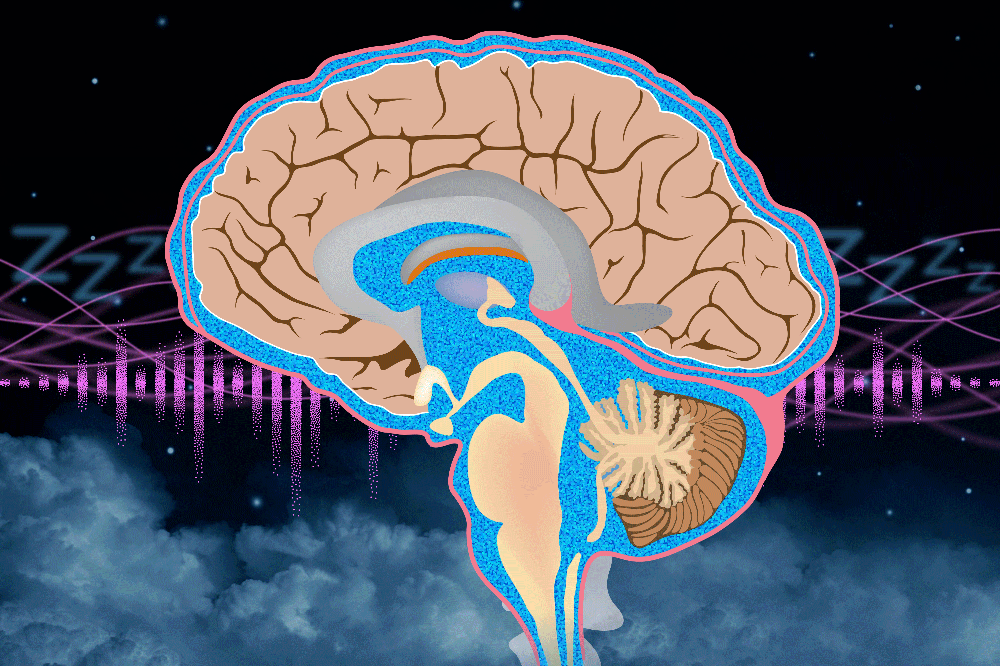

כאשר משמיעים אותו בדיוק ברגע הנכון, גירוי קולי עדין יכול לחזק את זרימת נוזל המוח והשדרה, המסייע בפינוי פסולת מהמוח ובשמירה על בריאותו.

במחקר חדש הראו חוקרי MIT כי ״רעש ורוד״, המושמע בתזמון מדויק במהלך מחזור השינה, יכול לחזק את זרימת נוזל המוח והשדרה. קרדיט: Christine Daniloff, MIT; iStock. התמונה מוצגת בהתאם לרישיון CC BY-NC-ND של MIT News.
במהלך היום מצטברים במוח תוצרי פסולת, ובהם חומצת חלב וחלבונים שחוקים. כאשר אנחנו ישנים בלילה, גלים של נוזל המוח והשדרה, CSF, מסייעים לשטוף את הפסולת הזאת ולשמור על בריאות המוח.
במחקר חדש הראו חוקרי MIT כי אפשר לחזק את גלי ה־CSF באמצעות חשיפה לפרצים קצרים של צליל עדין וסטטי המכונה ״רעש ורוד״ במהלך השינה. הפרצים מגבירים את המשרעת של הגלים החשמליים האיטיים במוח, ואלה בתורם מגדילים את גלי נוזל המוח והשדרה.
החוקרים מבקשים כעת לבדוק אם זרימה מוגברת של CSF יכולה לחזק תפקוד קוגניטיבי, לשפר זיכרון, או אפילו להאט מחלות ניווניות של מערכת העצבים שנגרמות מהצטברות חלבונים מזיקים כמו עמילואיד־בטא.
״מצאנו שהצלחנו להגדיל את גל זרימת ה־CSF במהלך השינה. ככל הידוע לנו, לא הייתה דרך לעשות זאת קודם. עכשיו, לאחר שאנחנו יכולים להגביר את זרימת ה־CSF בשינה אצל מבוגרים בריאים, אנחנו נרגשים להביא את הטכנולוגיה לאוכלוסיות קליניות ולראות אילו השפעות נוכל להשיג״, אומרת לורה לואיס.
לואיס היא פרופסורית חברה להנדסת חשמל ומדעי המחשב על שם Athinoula A. Martinos, חברה במכון להנדסה רפואית ומדע ובמעבדת המחקר לאלקטרוניקה של MIT, וחברה־עמיתה במכון Picower ללמידה וזיכרון. היא המחברת הבכירה של המחקר, שהתפרסם בכתב העת Science Translational Medicine. המחבר הראשי הוא ג׳ושוע לוויט, שסיים לאחרונה דוקטורט באוניברסיטת בוסטון והיה סטודנט אורח במעבדה של לואיס.
נוזל המוח והשדרה הוא נוזל שקוף המקיף את המוח ואת חוט השדרה ומרפד אותם. מעבר להגנה מפני פציעה, הוא מסייע לספק חומרי הזנה כמו גלוקוז ומסלק תוצרי פסולת שתאי המוח מפרישים בזמן הפקת אנרגיה.
ב־2019 דיווחה לואיס על שיטה למדידת גלי CSF הנכנסים למוח ויוצאים ממנו במהלך השינה באמצעות דימות תהודה מגנטית תפקודי, fMRI. המחקר ההוא הראה שהגלים האלה מצומדים בחוזקה לגלי מוח המכונים גלים איטיים, המזוהים עם שינה עמוקה.
במחקר החדש ביקשה לואיס לבחון לעומק את הקשר בין גלי המוח לזרימת ה־CSF, ולבדוק אם שינוי מכוון של גלי המוח יוכל להגביר את הזרימה. מחקרים קודמים כבר הראו כי גירוי שמיעתי המושמע בשיאם של גלים איטיים יכול להעמיק אותם.
״אפשר לייצר יותר מהגלים החשמליים האיטיים האלה באמצעות גירוי שמיעתי, אם הוא מגיע בדיוק ברגע הנכון. זה דומה לילד על נדנדה: אם דוחפים אותו ברגע הנכון בתנועה, אפשר לגרום לנדנדה להגיע רחוק יותר. האתגר הוא איך למצוא את הרגע המדויק״, אומרת לואיס.
הגירוי השמיעתי במחקר היה פרץ של רעש ורוד באורך 50 אלפיות השנייה בלבד. בדומה לרעש לבן, רעש ורוד מכיל את כל תדרי הקול שהאוזן האנושית יכולה לשמוע, אך התדרים הנמוכים בו חזקים יותר והתדרים הגבוהים חלשים יותר. התוצאה היא צליל מאוזן ועדין, המזכיר גשם יציב או מפל מים רחוק.
כדי להשמיע את הפרצים בשיא הגלים האיטיים במוח, החוקרים נדרשו למדוד את פעילות ה־EEG של כל משתתף בזמן השינה. זו הייתה משימה מורכבת במיוחד, מפני שבאותו זמן הם גם היו צריכים למדוד אותות fMRI כדי לעקוב אחר זרימת ה־CSF, והשדות המגנטיים של מכשיר ה־MRI מפריעים לאותות ה־EEG.
כדי להתגבר על כך פיתחו החוקרים דרך לעבד את אותות ה־EEG ולסלק במהירות רבה, בתוך פחות מ־100 אלפיות השנייה, את הרעש שנוצר בגלל ה־fMRI. כדי לפצות על ההשהיה הקטנה במדידת ה־EEG, הם פיתחו גם אלגוריתם שחזה מתי יגיעו שיאי הגלים האיטיים. כך ניתן היה לשלוח את פרץ הרעש הוורוד בזמן הנכון.
בניסוי שכלל 14 מתנדבים בריאים מצאו החוקרים כי הגירוי השמיעתי, שלא היה חזק מספיק כדי להעיר את הישנים, הגדיל בזמן השינה הן את משרעת הגלים החשמליים האיטיים והן את משרעת גלי ה־CSF.
מדידות ה־fMRI חשפו גם מנגנון אפשרי: הגלים האיטיים גורמים לכלי הדם להתכווץ ולהתרחב. התנועה הזאת מאפשרת לכלי הדם לפעול כמשאבה הדוחפת את נוזל המוח והשדרה אל מחוץ למוח. גלים איטיים מופיעים רק בשנת non-REM, והם בולטים יותר בשלבי השינה העמוקים.
החוקרים מתכננים כעת לבדוק אם הגברת זרימת ה־CSF יכולה לסייע לאנשים לישון שינה משקמת יותר, ובפרט לאנשים הסובלים מאינסומניה. הם גם רוצים לבדוק אם הגדלת זרימת הנוזל ופינוי הפסולת מהמוח עשויים לסייע לאנשים עם אלצהיימר ומחלות אחרות המאופיינות בהצטברות חלבונים מזיקים.
״פינוי פסולת מהמוח חשוב מאוד באלצהיימר ובצורות אחרות של דמנציה, שנגרמות בחלקן מהצטברות מולקולות כמו עמילואיד וטאו במוח. אם נוכל לשפר את פינוי הפסולת, אולי נוכל לעזור למנוע את הצטברות הרבדים שמובילים למחלה״, אומר לוויט.
לוויט כבר הקים חברה המבקשת לפתח מכשיר לשימוש ביתי, למשל סרט־ראש, שיוכל להגביר את זרימת ה־CSF באמצעות גירוי שמיעתי המושמע בתזמון הנכון.
המחקר מומן בידי McKnight Scholar Award, מלגת Sloan, פרס Pew Biomedical Scholars, שיתוף הפעולה של Simons Foundation בנושא פלסטיות במוח המזדקן, קרן המחקר הטרנספורמטיבי של MIT EECS, המכונים הלאומיים לבריאות בארה״ב, Corundum Convergence Institute ומלגת Panasonic Well ל־AI ורווחה.